Recognized as a top-performing intern in a six-week paid placement.
My move
Created social content, copy, articles, and research for the agency. Quality-tested a client AI chatbot.
Backdrop
My first international operating role, at Icon Creations in Cairo.
“Krishna is a driven, committed, and smart professional with a passion for discovery, and he would be a valuable addition to any team in any industry.”
Detail: ResumeFit: a résumé tool that cannot invent
Detail
ResumeFit: a résumé tool that cannot invent
Role
Builder
Built with
Claude (AI-assisted development)
Status
I have since left the project. The site is still online.
ResumeFit rebuilds a résumé around one job posting using only what the user has done, and reports the requirements they cannot honestly claim. I built it with Claude and launched it in November 2026. I have since left the project.
What I built
Sign-up with email confirmation, PDF and Word résumé import into a structured profile, a tailoring pipeline, a match report, five résumé templates, chat refinement, an application tracker, and a free keyword checker that needs no account.
The guardrail, enforced three times
The prompt lets the model cite only fact ids it was given, and every number must appear in a cited fact.
A validator drops bullets without valid citations, restores your own wording when a number was invented, removes skills that are not in your profile, and turns unsupported matches into gaps.
The database re-checks every citation before a version is saved.
From the project README. The repository is private, so this is documented, not publicly inspectable.
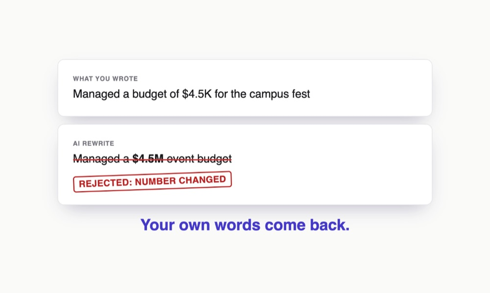
Product Hunt launch graphic with sample text. It illustrates the rule; it is not a real user's résumé.The app's résumé view with a fictional profile and test data.
A product decision
7 Nov 2026First commit. A $4, 30-day pass was part of the design.
About 12 NovProduct Hunt launch with one free preview, then $4 for 30 days.
14 NovI paused payments and made the product free during the beta.
I made it free because the paid pass was not converting. The dates come from the commit history. The Product Hunt listing shows that it shipped; I have no paying users or traction numbers to report.
06 · Saathi · 2026 Saathi: First Prize at Tetr LaunchLab
Saathi Prototype, 2026
The win
Won First Prize at Tetr LaunchLab, a 3-day startup sprint, with a working Saathi prototype and a US$300 cash prize.
My move
Prototyped a way for families to organize healthcare documents and care information.
Backdrop
A personal healthcare coordination experiment, judged on distribution, marketing strategy and execution. I have since left the project.
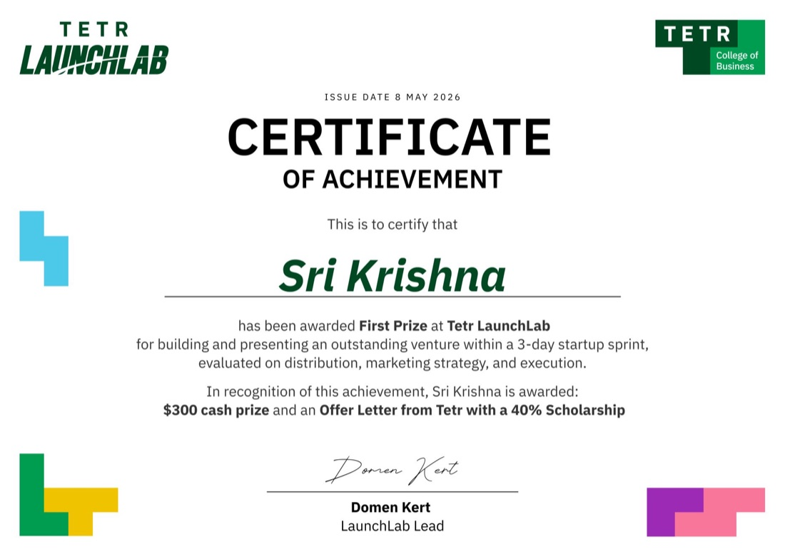
Tetr LaunchLab certificate, 8 May 2026
Source: Tetr LaunchLab certificate, issued 8 May 2026
07 · CaseUnion and Careers Club · 2026 CaseUnion and the career clubs
CaseUnion 4.0 Nov 2026, finale 12 Dec
The win
Individually secured ₹4 lakh in sponsorship and ₹3 lakh in kind for CaseUnion 4.0.
My move
Built AI agents on Muse that automated custom outreach, and used the same method to drive registrations from all 22 IIMs, 15 IITs, 18 NITs and 600+ other colleges.
Backdrop
3,800+ registrations by 23 November 2026, and Masters' Union's first collaboration with Harvard (as content partner). As VP Careers, I also coordinated clubs and campus teams.
Event creative with the finale date and partner roles
Detail: CaseUnion 4.0: a national case competition
Detail
CaseUnion 4.0: a national case competition
Role
VP Careers
Where
Masters' Union, Gurugram
Dates
Festival 15 Nov to 14 Dec 2026; finale 12 Dec
I built AI outreach agents and used them to win sponsors and drive registrations. CaseUnion 4.0 had 3,800+ registrations by 23 November 2026, a dated snapshot, not a final outcome.
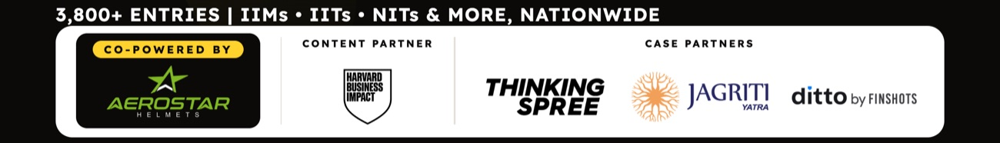
Crop of the 23 Nov 2026 event creative. The partner labels are the creative's own.
What I did
The problem: the competition needed sponsors and entries from campuses across India, and writing to each person by hand was too slow.
What I did, individually: I built AI agents on Muse that automated custom outreach, with each message written for the person receiving it.
Sponsors: I secured ₹4 lakh in sponsorship and ₹3 lakh in kind.
Campuses: I used the same method to drive registrations. Entries came from all 22 IIMs, 15 IITs, 18 NITs and 600+ other colleges.
As VP Careers, I also coordinated student clubs and campus teams. The creative lists me as the registration contact, as CaseUnion Head and VP Careers.
What the figures are
3,800+ is the entry count on the event creative of 23 Nov 2026. The Unstop event page showed 4,745 registrations when I read it on 25 Nov 2026, after registrations closed on 23 Nov. Both are snapshots; the finale is on 12 Dec.
₹4 lakh in sponsorship and ₹3 lakh in kind are the amounts I secured across partners, as I state them. They are separate from the ₹5 lakh, which is the festival's prize pool and not mine.
Harvard Business Impact is labelled as content partner on the creative. It is not a title partnership. I describe it as the school's first collaboration with Harvard; other partner roles are as the creative labels them.
Speaking
I was invited to speak about case competitions and careers at Ramaiah University's Arthabodha Economics Club (online, 30 Sep 2026) and at Fetch-a-thon 3.0 at Masters' Union (11 Oct 2026, as VP Careers).
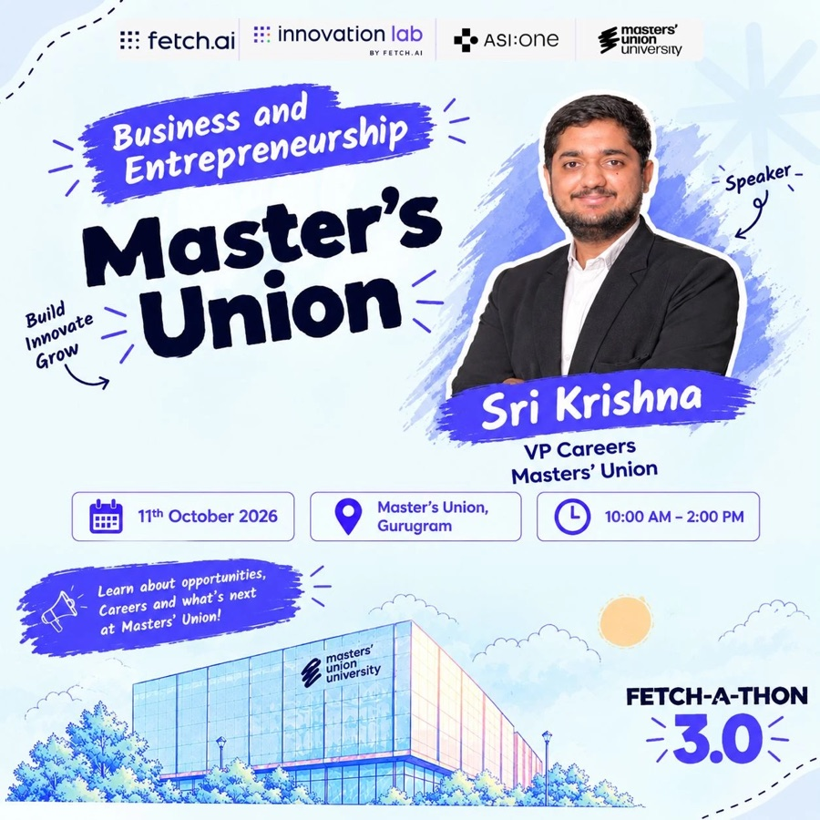
Fetch-a-thon 3.0 speaker poster, 11 Oct 2026
Separate from CaseUnion
As elected Vice President, Careers, my term covered 40 events in 5 months across 13 clubs on a ₹25 lakh budget, including three full-day hackathons (two on AI) and 400,000+ impressions. These are club figures from my résumé, not part of the CaseUnion count and not a personal result.
Recognized as a top-performing intern in a six-week paid placement.
My move
Created social content, copy, articles, and research for the agency. Quality-tested a client AI chatbot.
Backdrop
My first international operating role, at Icon Creations in Cairo.
“Krishna is a driven, committed, and smart professional with a passion for discovery, and he would be a valuable addition to any team in any industry.”
Won First Prize at Tetr LaunchLab, a 3-day startup sprint, with a working Saathi prototype and a US$300 cash prize.
My move
Prototyped a way for families to organize healthcare documents and care information.
Backdrop
A personal healthcare coordination experiment, judged on distribution, marketing strategy and execution. I have since left the project.
Tetr LaunchLab certificate, 8 May 2026
Source: Tetr LaunchLab certificate, issued 8 May 2026
07 · CaseUnion and Careers Club · 2026
CUNOV 26
CaseUnion and the career clubs
The win
Individually secured ₹4 lakh in sponsorship and ₹3 lakh in kind for CaseUnion 4.0.
My move
Built AI agents on Muse that automated custom outreach, and used the same method to drive registrations from all 22 IIMs, 15 IITs, 18 NITs and 600+ other colleges.
Backdrop
3,800+ registrations by 23 November 2026, and Masters' Union's first collaboration with Harvard (as content partner). As VP Careers, I also coordinated clubs and campus teams.
Event creative with the finale date and partner roles
I built AI outreach agents and used them to win sponsors and drive registrations. CaseUnion 4.0 had 3,800+ registrations by 23 November 2026, a dated snapshot, not a final outcome.
Crop of the 23 Nov 2026 event creative. The partner labels are the creative's own.
What I did
The problem: the competition needed sponsors and entries from campuses across India, and writing to each person by hand was too slow.
What I did, individually: I built AI agents on Muse that automated custom outreach, with each message written for the person receiving it.
Sponsors: I secured ₹4 lakh in sponsorship and ₹3 lakh in kind.
Campuses: I used the same method to drive registrations. Entries came from all 22 IIMs, 15 IITs, 18 NITs and 600+ other colleges.
As VP Careers, I also coordinated student clubs and campus teams. The creative lists me as the registration contact, as CaseUnion Head and VP Careers.
What the figures are
3,800+ is the entry count on the event creative of 23 Nov 2026. The Unstop event page showed 4,745 registrations when I read it on 25 Nov 2026, after registrations closed on 23 Nov. Both are snapshots; the finale is on 12 Dec.
₹4 lakh in sponsorship and ₹3 lakh in kind are the amounts I secured across partners, as I state them. They are separate from the ₹5 lakh, which is the festival's prize pool and not mine.
Harvard Business Impact is labelled as content partner on the creative. It is not a title partnership. I describe it as the school's first collaboration with Harvard; other partner roles are as the creative labels them.
Speaking
I was invited to speak about case competitions and careers at Ramaiah University's Arthabodha Economics Club (online, 30 Sep 2026) and at Fetch-a-thon 3.0 at Masters' Union (11 Oct 2026, as VP Careers).
Fetch-a-thon 3.0 speaker poster, 11 Oct 2026
Separate from CaseUnion
As elected Vice President, Careers, my term covered 40 events in 5 months across 13 clubs on a ₹25 lakh budget, including three full-day hackathons (two on AI) and 400,000+ impressions. These are club figures from my résumé, not part of the CaseUnion count and not a personal result.
I have since left the project. The site is still online.
ResumeFit rebuilds a résumé around one job posting using only what the user has done, and reports the requirements they cannot honestly claim. I built it with Claude and launched it in November 2026. I have since left the project.
What I built
Sign-up with email confirmation, PDF and Word résumé import into a structured profile, a tailoring pipeline, a match report, five résumé templates, chat refinement, an application tracker, and a free keyword checker that needs no account.
The guardrail, enforced three times
The prompt lets the model cite only fact ids it was given, and every number must appear in a cited fact.
A validator drops bullets without valid citations, restores your own wording when a number was invented, removes skills that are not in your profile, and turns unsupported matches into gaps.
The database re-checks every citation before a version is saved.
From the project README. The repository is private, so this is documented, not publicly inspectable.
Product Hunt launch graphic with sample text. It illustrates the rule; it is not a real user's résumé.The app's résumé view with a fictional profile and test data.
A product decision
7 Nov 2026First commit. A $4, 30-day pass was part of the design.
About 12 NovProduct Hunt launch with one free preview, then $4 for 30 days.
14 NovI paused payments and made the product free during the beta.
I made it free because the paid pass was not converting. The dates come from the commit history. The Product Hunt listing shows that it shipped; I have no paying users or traction numbers to report.
Confirms the six-week paid placement, 12 June to 26 July 2023, and top-performing intern.
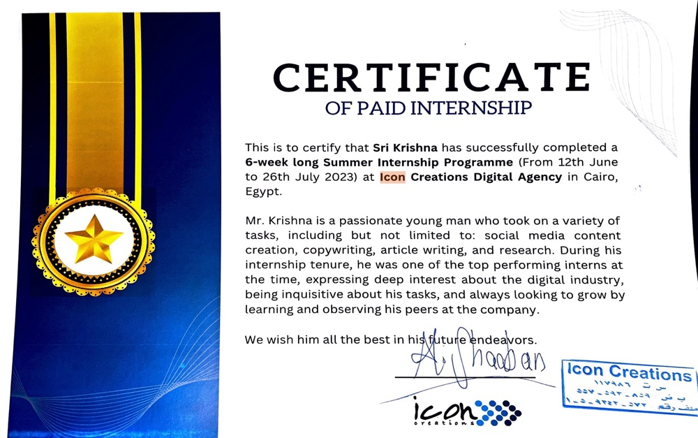
Proof
District Collector's internship certificate
Confirms the internship, 18 August to 18 September 2023. Contact details and a family name are covered.
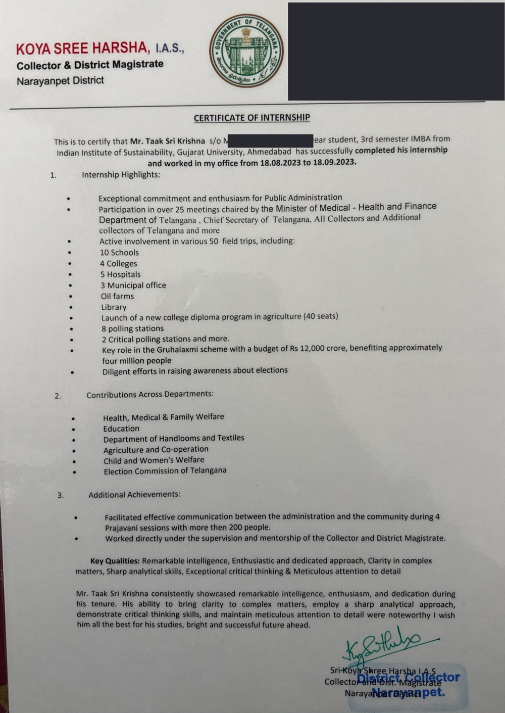
Proof
AIESEC experience letter
Confirms membership, roles and results, August 2023 to July 2024. Signer's contact details are cropped.
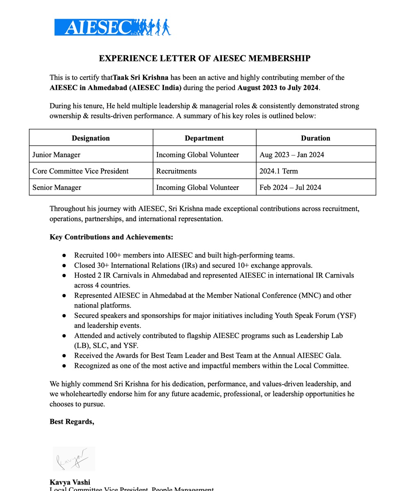
Proof
SRISTI letter of recommendation, page 1
From Chetan V. Patel, SRISTI. Contact details are cropped.
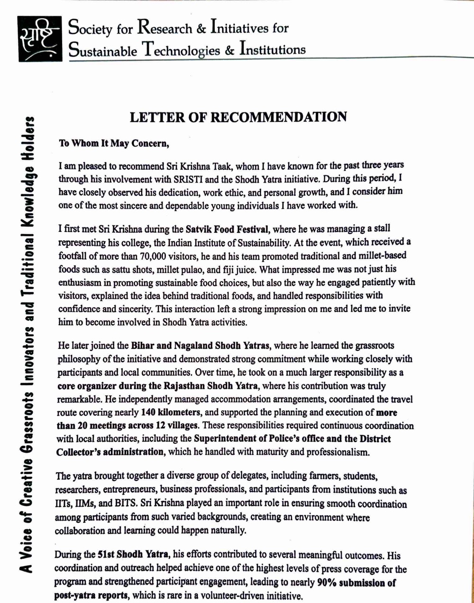
Proof
Akshaya Patra internship certificate
Confirms the internship and asset verification project, 1 to 30 June 2024. Contact details are covered.
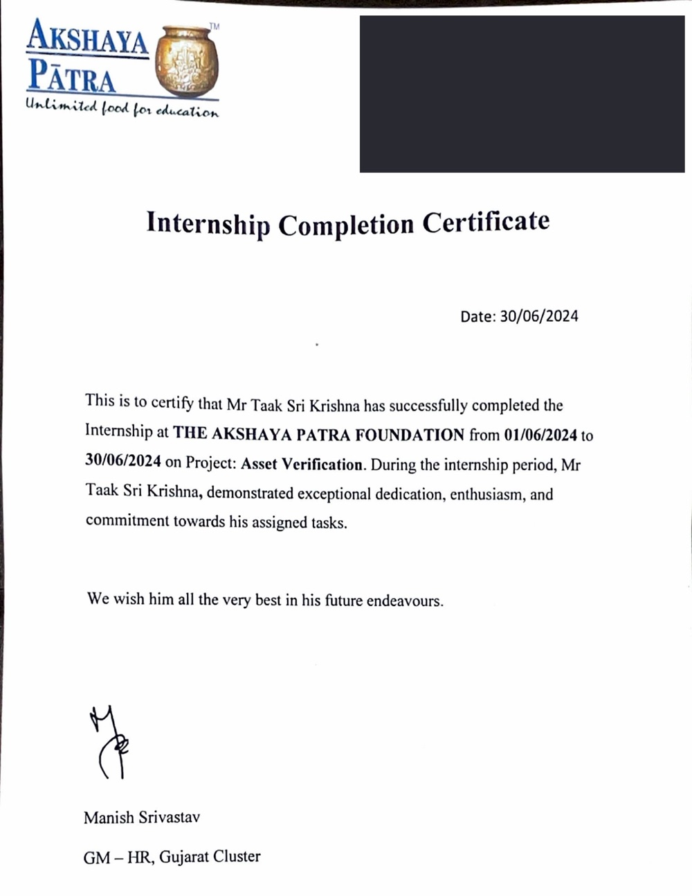
Proof
NITI Aayog internship letter
Confirms the internship in the Agriculture vertical, 7 August to 4 October 2024, and a report on the pulses sector. Contact details and reference number are covered.
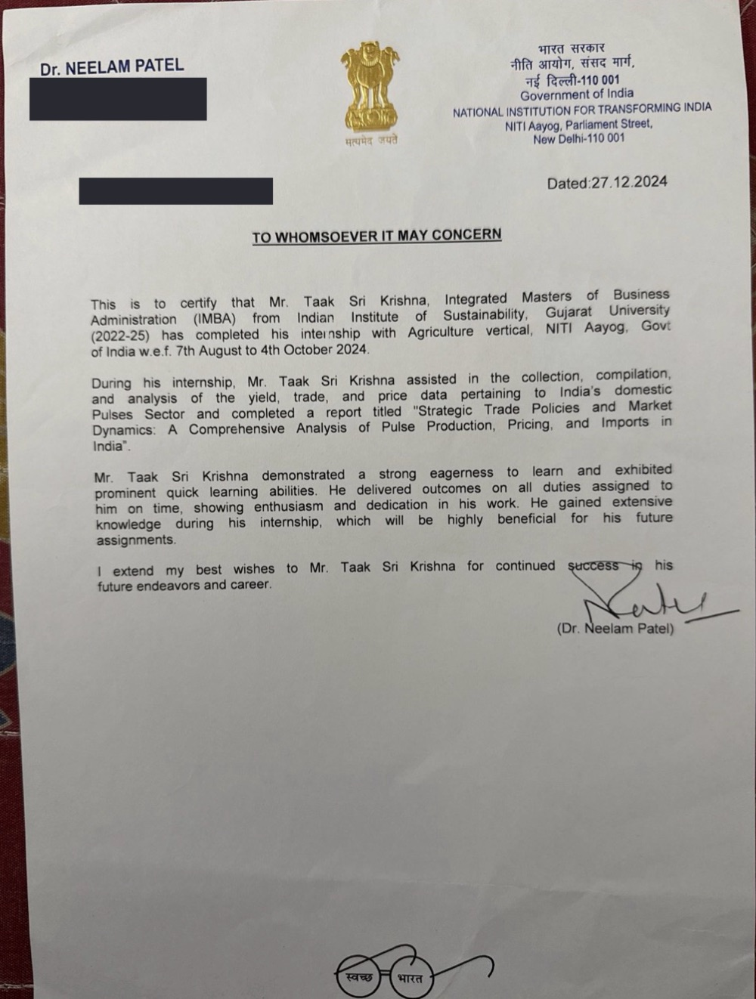
Proof
HPAIR Harvard Conference 2025 acceptance
Confirms selection for the conference, 7 to 9 February 2025. It does not mention the Impact Challenge.
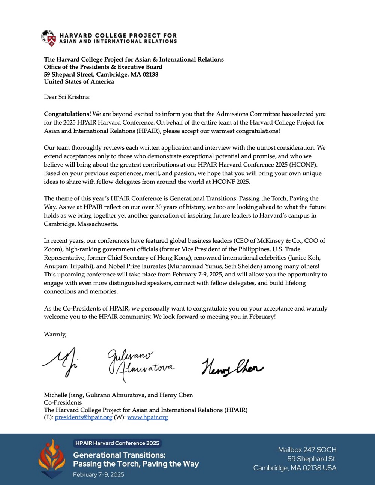
Proof
Policy Gazette 2026 result message
Message from Team Praxis, IIFT Delhi, announcing third position. From my LinkedIn post.